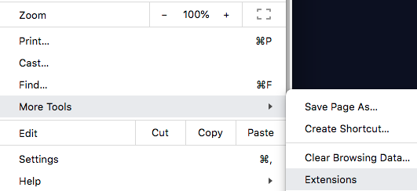
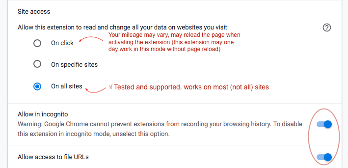
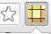
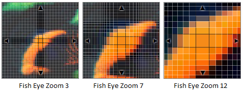
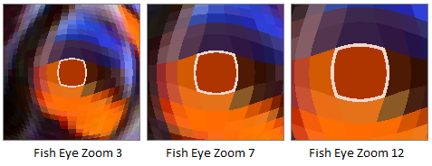

Help
ColorPick is designed to be used with a mouse, track-pad, or other mouse-like input device that has a cursor you can move. Input devices (like fingers) which do not have separate click button and do not track mouse movement will not work very well to control the ColorPick extension (you could only move from the popup). To use ColorPick on these devices try the Mobile Version of ColorPick.
To enable use on local pages/files follow these steps and then refresh the page you wish to pick colors from:

or more recently:
 
On a standard webpage click the icon then move your mouse pointer over the webpage to pick colors. Some websites may not be supported, if you are having trouble try the Color Wheel linked below.
A Color Wheel to test with. You may have to test with a website instead of an image unfortunately, although for some it may work on image URLs as well.
You may have to pop out the preview window using
 .
.
Some notes about scrolling - when you scroll the window the program has to take another snapshot of the screen for you to pick colors from. There is a delay while this occurs so the results of scrolling or resizing will not be immediate. There is also a chance that the screenshot will include the preview box. If this happens move your mouse before you scroll or click the
 refresh snapshot button.
refresh snapshot button.
Quick trick - if the preview is ever out of sync, there's no need to click the icon again, you can usually scroll the page using the mousewheel which will refresh the preview. You can also press [r] or [j] or click
. [esc] exits the picker.
Pro tip - If you are moving your mouse while scrolling it is possible to trigger mouse-over events and states. Target the element you want to activate, then scroll down one notch using the mousewheel. Next slowly slide your mouse horizontally while you scroll the mousewheel back up one notch. The element you targeted should now be activated allowing you to pick colors from mouseover states of buttons. The hotkeys [r] or [j] also allow mouse interaction for a short time.
Zoom Hints: If you zoom the popup window or this window, the color picker preview popup will always appear at the zoom you set here or in the popup window (control scroll or ctrl +/-) If the zoom of the preview window is messed up press control-0 (command-0) or otherwise reset the zoom of this page or the options page.
If you switch to a page that is zoomed in, you may find portions of the screen are solid black pixels. This can be correctd by pressing [r] or
to refresh the snapshot of the page.
Note: zooming this page is not supported, it may cause other things to be zoomed too, such as the picker, which may be good, and it may produce funny results too, it will also cause the pop-out version of the pop-up to be zoomed, you can use this pop-out to adjust or reset zoom. Ctrl-Zero resets the page zoom.
If it doesn't seem to be working, make sure you are on an http:// or https:// page and not on the extensions site. Refresh the page if you just enabled ColorPicker. You have to wait until the page is fully loaded before clicking color picker.
Does not always work with flash objects, try adding wmode="opaque" to the embed code.
Click the current color box (below the preview and above the
The preference "Icon is zoomed pixel preview" has this effect: 
The amount of zoom for the icon is modified by the ""Fish Eye Zoom Amount" setting:


The second row illustrates the effect of "Allow WebGL for Pixelated Preview" (on platforms where supported)
Keyboard Controls
esc -
 exit picker
exit pickerr or j -
refresh (pick from new snapshot, useful for brief interaction)enter -
From Pop-up Only
arrow keys - move pixel (when picking mode is active)
~ (tilda) - hide popup (refocus + refresh snapshot of web page, restores text selection vibrant. Alternative: right click close X of popup)
enter -
This software is beta and is provided as is, please provide feedback for improvements at vidsbee.com/Contact Thanks!